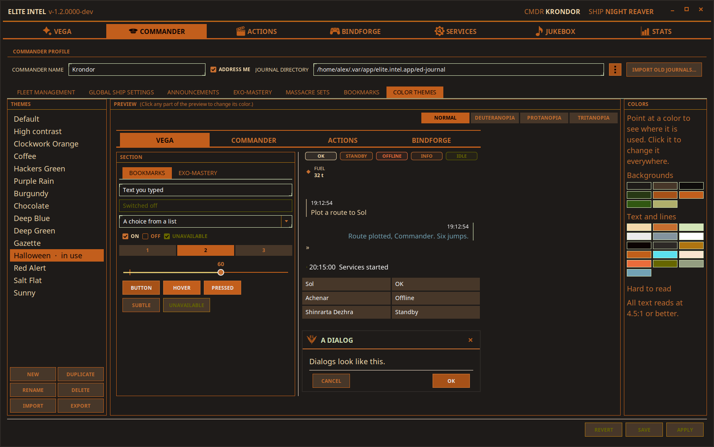
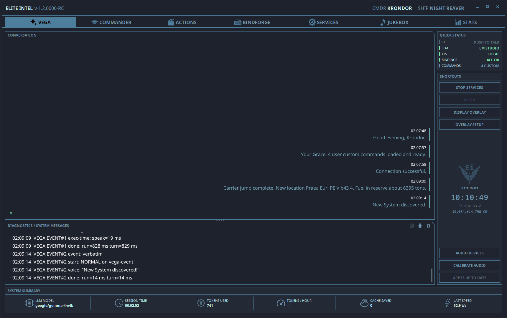
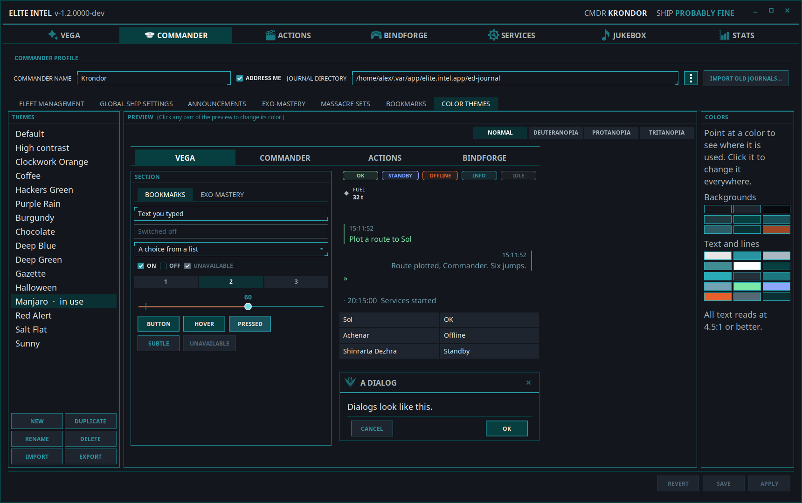
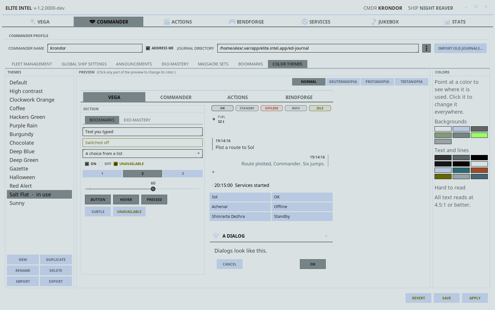
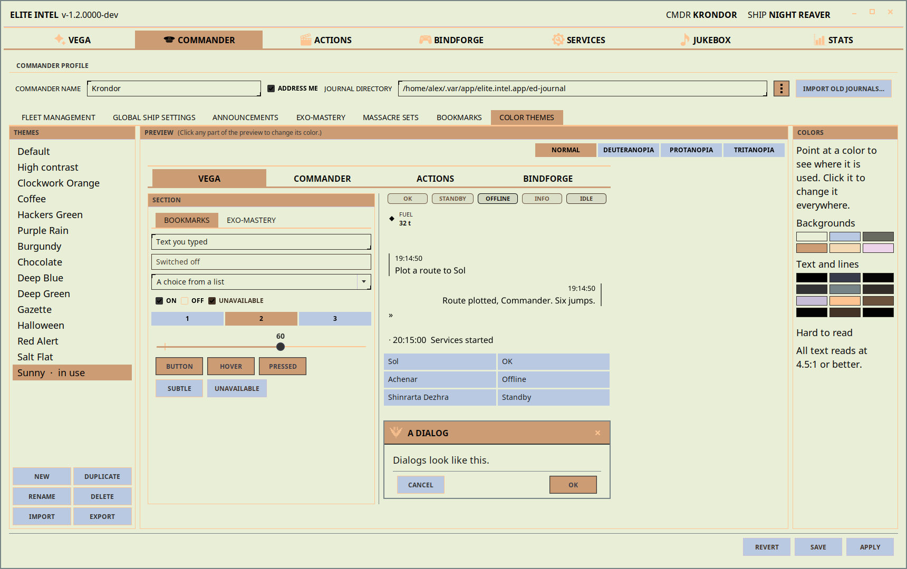

Колірні теми
 Командир → Колірні теми:
кольори, якими намальовано вікно застосунку. Оберіть одну з вбудованих тем, зробіть власну або завантажте одну з
тем нижче.
Командир → Колірні теми:
кольори, якими намальовано вікно застосунку. Оберіть одну з вбудованих тем, зробіть власну або завантажте одну з
тем нижче.

Стандартні кольори вже підібрані для командирів із порушеннями кольорового зору: зелений, синій і червоний, що означають OK, очікування й небезпеку, розрізняються за найпоширеніших видів кольорової сліпоти, а будь-який текст читається з контрастом не нижче 4,5:1 до свого фону. Якщо вони все ж не пасують вашим очам чи екрану, зробіть власну тему.
HUD-оверлей не входить до теми. Він має власні кольори, у власних налаштуваннях.
Вбудовані теми
- Стандартна: підібрані кольори, описані вище.
- Високий контраст — для слабкого зору чи відблисків: чорне тло, білий текст, яскравіші рамки й будь-який текст із контрастом 7:1 або вище.
- Clockwork Orange — помаранчева, як HUD самої гри і як застосунок до V1.2.
- Coffee — теплі коричневі й кремові тони.
- Hackers Green — зелений на чорному, як старий термінал.
- Purple Rain — фіолетовий на майже чорному.
- Red Alert — червоний на чорному.
Стандартна й «Високий контраст» зроблені так, щоб їх було легко читати. Решта зроблені заради вигляду: вони не підібрані для порушень кольорового зору.
Вбудовані теми змінити не можна: перша зміна в такій темі потрапляє до її копії.
Високий контраст

Clockwork Orange

Coffee

Hackers Green

Purple Rain

Red Alert

Власна тема
- Натисніть на будь-яку частину перегляду, щоб змінити її колір. Перегляд малює сам застосунок, тому він виглядає саме так, як виглядатиме застосунок. Якщо цей колір мають і інші частини, ви обираєте: Усі частини з цим кольором або Лише цю частину.
- Наведіть на частину перегляду або на один із Кольорів праворуч, і все інше затемниться, щоб було видно, де використано цей колір. Натискання на колір змінює його всюди.
- Показати як показує перегляд так, як його бачить людина з дейтеранопією, протанопією чи тританопією, — можна перевірити тему, перш ніж ділитися нею.
- Важко читати перелічує текст, який ваша тема робить важкочитаним, з його контрастом. Натисніть, щоб виправити, або Виправити все: колір стане рівно настільки світлішим чи темнішим, наскільки треба. Це лише попередження: зберегти тему можна завжди.
- Зберегти зберігає зміни. Застосувати зберігає й робить тему поточною. Застосунок читає кольори під час запуску, тому пропонує перезапуститися.
Під списком є кнопки Нова, Дублювати, Перейменувати й Видалити, а також Імпорт і Експорт для обміну темами (див. нижче).
Ваші теми зберігаються разом із даними застосунку, тож Резервна копія їх включає.
Обмін темами
- Експорт записує вибрану тему у файл, яким можна поділитися, — саме в тому вигляді, який вона має зараз, разом із незбереженими змінами.
- Імпорт додає тему, якою з вами поділилися. Якщо у вас уже є тема з такою назвою, ви обираєте: Замінити її або Залишити обидві.
Зробили тему, яка вам подобається? Поділіться нею в Matrix.
Завантажити ще теми
Ще десять тем на спробу. Завантажте одну, потім у Командир → Колірні теми натисніть Імпорт, оберіть файл і натисніть Застосувати. Ці теми зроблені заради вигляду: вони не підібрані для порушень кольорового зору. Gazette, Salt Flat і Sunny — світлі теми.
⬇ Завантажити всі десять (zip)
Спершу розпакуйте архів: Імпорт приймає один файл теми за раз.
Burgundy

Блідо-зелений текст на темно-бордовому, з бузковими рамками. ⬇ Burgundy.json
Chocolate

М'який білий і сірий на майже чорному. ⬇ Chocolate.json
Deep Blue

Відтінки синього на опівнічно-синьому. ⬇ Deep-Blue.json
Deep Green

Яскраві зелені на чорному. ⬇ Deep-Green.json
Gazette

Чорне чорнило на білому папері, як газета. ⬇ Gazette.json
Halloween

Гарбузово-помаранчевий на темно-коричневому. ⬇ Halloween.json
Islands

Сталевий синій на темному синьо-сірому. ⬇ Islands.json
Manjaro

Бірюзовий і ціан на темно-сланцевому, за мотивами робочого столу Manjaro KDE. ⬇ Manjaro.json
Salt Flat

Грифельно-сірий на блідому сіро-блакитному. ⬇ Salt-Flat.json
Sunny

Чорний і бежевий на блідо-кремовому. ⬇ Sunny.json
Community 👉Matrix👈